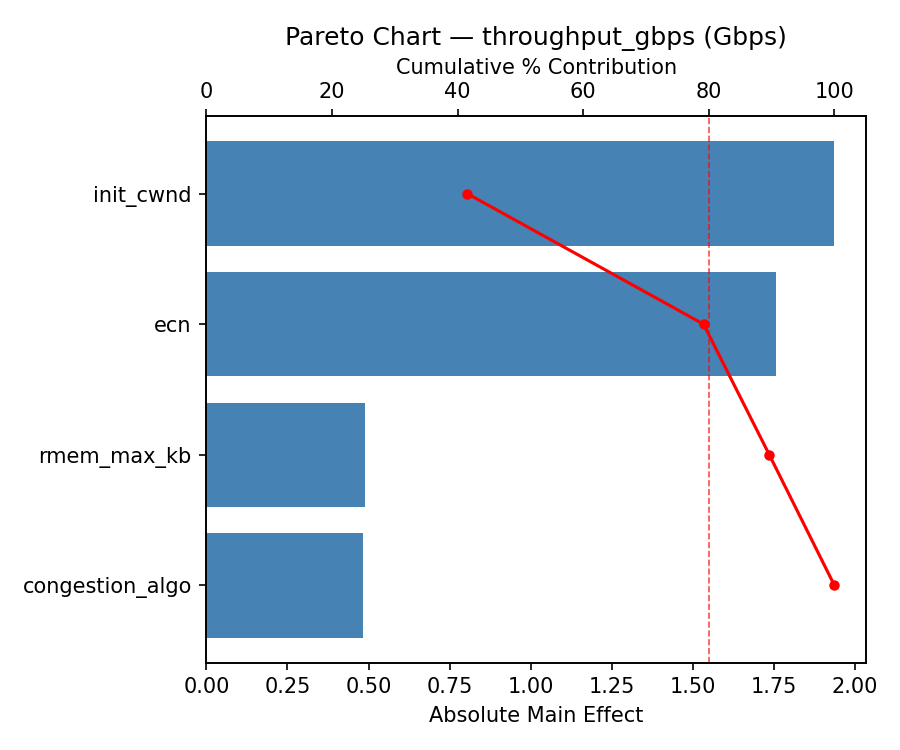
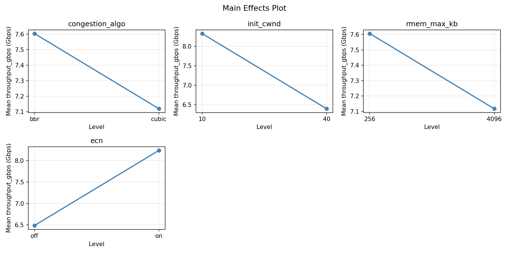
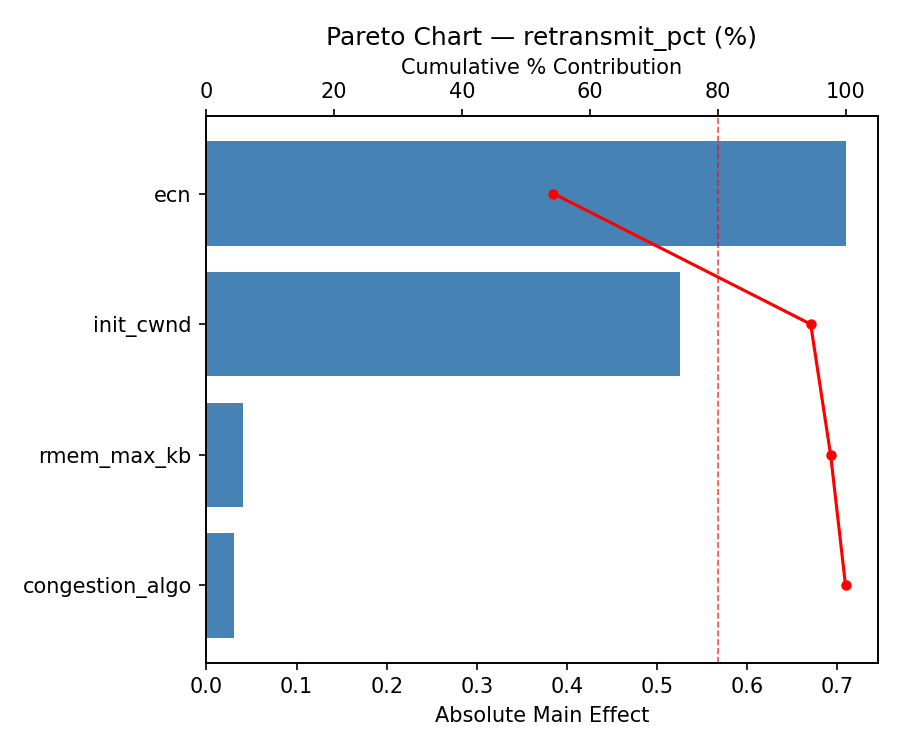
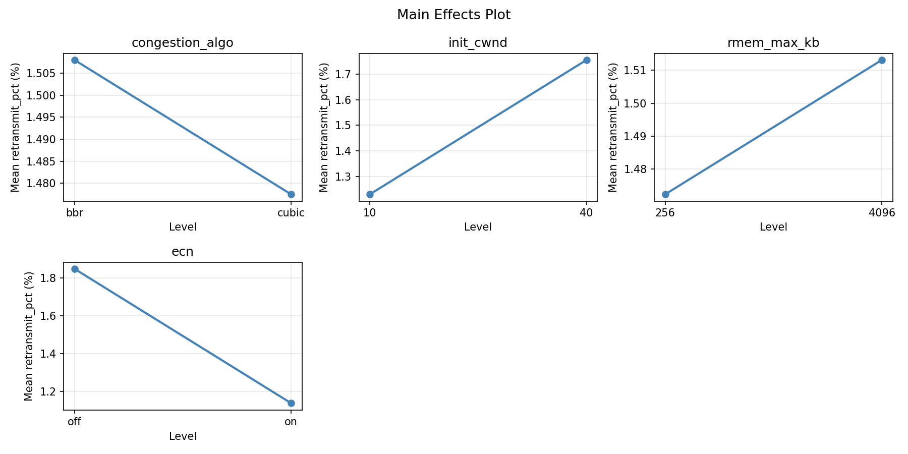
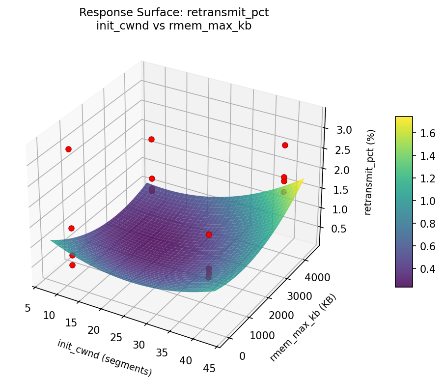
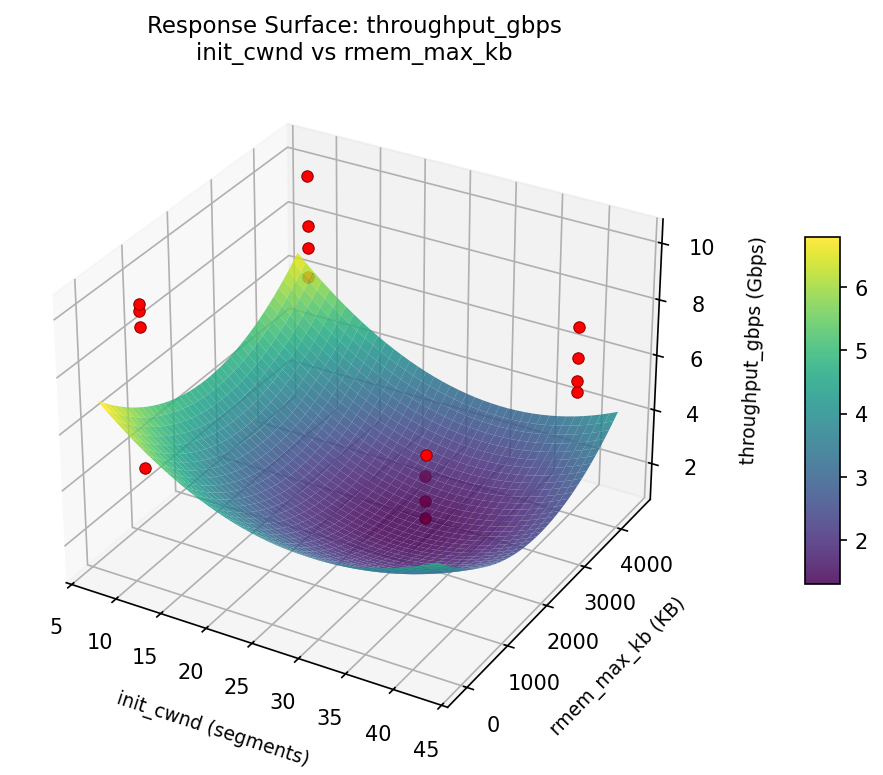

Full factorial of congestion algorithm, initial window, buffer sizes, and ECN for throughput and fairness
| Factor | Low | High | Unit |
|---|---|---|---|
congestion_algo | cubic | bbr | |
init_cwnd | 10 | 40 | segments |
rmem_max_kb | 256 | 4096 | KB |
ecn | off | on |
Fixed: mtu = 1500, link_speed = 10Gbps
| Response | Direction | Unit |
|---|---|---|
throughput_gbps | ↑ maximize | Gbps |
retransmit_pct | ↓ minimize | % |
The Full Factorial Design produces 16 runs. Each row is one experiment with specific factor settings.
| Run | congestion_algo | init_cwnd | rmem_max_kb | ecn |
|---|---|---|---|---|
| 1 | cubic | 40 | 4096 | on |
| 2 | bbr | 10 | 256 | on |
| 3 | cubic | 40 | 256 | on |
| 4 | cubic | 40 | 4096 | off |
| 5 | bbr | 40 | 4096 | off |
| 6 | bbr | 10 | 4096 | off |
| 7 | bbr | 40 | 256 | off |
| 8 | bbr | 10 | 256 | off |
| 9 | cubic | 10 | 256 | on |
| 10 | cubic | 10 | 4096 | off |
| 11 | bbr | 40 | 256 | on |
| 12 | bbr | 40 | 4096 | on |
| 13 | cubic | 40 | 256 | off |
| 14 | bbr | 10 | 4096 | on |
| 15 | cubic | 10 | 256 | off |
| 16 | cubic | 10 | 4096 | on |
| Feature | Value |
|---|---|
| Design type | full_factorial |
| Factor types | continuous (2), categorical (2) |
| Arg style | double-dash |
| Responses | 2 (throughput_gbps ↑, retransmit_pct ↓) |
| Total runs | 16 |
Generated from actual experiment runs using the DOE Helper Tool.
Top factors: init_cwnd (45.3%), ecn (37.2%), congestion_algo (13.3%).
Pareto Chart

Main Effects Plot

Top factors: init_cwnd (52.2%), congestion_algo (30.7%), rmem_max_kb (12.2%).
Pareto Chart

Main Effects Plot

3D surfaces fitted with quadratic RSM. Red dots are observed data points.
retransmit pct init cwnd vs rmem max kb

throughput gbps init cwnd vs rmem max kb
